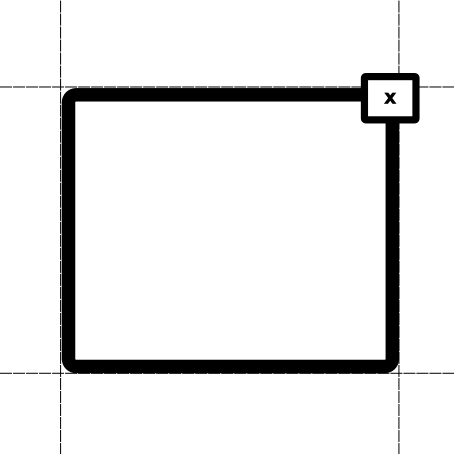
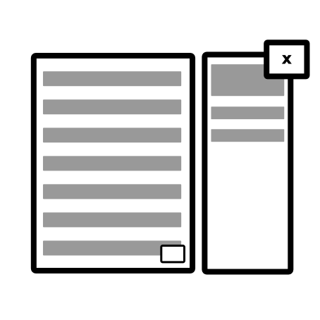

Hello world, this is my very first VD modal.
Click anywhere outside to close it.
Hello world!
This is my first modal using VD modal
Content always centered using flexbox.


Mister Penguin
3 weeks ago
Great day with my fellows!
-
Simple HTML modals
-

Centered modals using flexbox
-

Sidebar modals